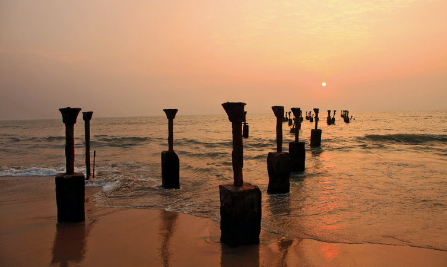

Kozhikode
Kozhikode or Calicut district, in the central part of the former Malabar district, is a
district of Kerala state, on the southwest coast of India. The city of Kozhikode, also known as Calicut,
is the district headquarters. The district is 38.25% urbanised. The Arabian Sea lies to the west and
Western Ghats stretches towards east. Vavul Mala is the highest peak in the district.
Places to Visit in Kozhikode
- Kozhikode Beach.
- Mananchira.
- Beypore Beach.
- Thusharagiri Fall.
- Kakkayam Dam.

Situated on the Malabar coast and endowed with natural beauty, Kozhikode beach should be a must in the itinerary of your visit to the city. This beach is renowned for the sunsets that tourists throng here to enjoy. Though the water is muddy and not suitable for swimming, still the stunning view of the Arabian Sea that the lighthouse offers more than compensates for the shortcoming. Payannakal, Putiyappa, Elathur, Beypore, all these beaches are part of the long stretch of Kozhikode beach. This beach lies on the western side of the city and is easily accessible through the four roads in the city.

Previously known as Mananchira Maidan, this place held many football matches. Mananchira scores high as one of the places to visit in Kozhikode. This place provides tranquility to the visitors which is much sought after as one wants to escape the chaotic city life. It is a beautiful park covered with lawns, traditional buildings, a musical fountain, and an open-air theatre. This park is built around a man-made lake known as Mananchira lake. One must not forget to visit Mananchira or Mana Vikraman Tank which was the primary water source for the royal family and is maintained till date in its pristine beauty. Mananchira is the best place for an evening stroll or to enjoy a picnic with families and friends. This park is popular among tourists and locals because of its natural sculptures and natural beauty.

Situated near the mouth of Chaliyar river, Beypore beach is a famous tourist destination. Your visit to Kozhikode remains incomplete without a day spent at Beypore beach. There is never a dearth of activities once you are at the beach. Clearly, one of the favourite tourist places to visit in Kozhikode, this beach takes into a different world with its numerous fun-filled activities to keep you engaged as it offers abundant water activities like surfing, sunbathing, water skiing and swimming. You can take in the vast expanse of rich golden sand, coconut trees that dot the coastline or the stone bridge known as Pulimoodu, which builds a pathway into the sea. There is never a dull moment at the beach and you can pamper yourself in a refreshing Ayurveda massage.

Enjoy the breathtaking beauty of Thusharagiri Fall when you pay a visit to Kozhikode. Two streams originating from the Western Ghats meet at this point to create the Chalipuzzha River. The river further trifurcates to create three waterfalls and the free-falling water creates a mist, thus giving the name “Thusharagiri”. This place has a lovely view all around and you get plenty of activities to indulge in. You may go for trekking, or enjoy rock-climbing. You can also take a break to visit the wildlife sanctuaries or sit on the banks of the river to enjoy the waterfalls. The lush green forest and cool water of the streams all around add to your enjoyment. A word of caution though, people with a faint heart should avoid the place because it is nature at its wildest best. This is a place to awaken the nature lover and wildlife enthusiast in you.

Kakkayam Dam is a famous picnic spot around Kozhikode because of its scenic beauty and plenty of choices for outdoor activities. Though the dam is small in size, it more than compensates with the small waterfalls around it. Take a peek at the varieties of animals and birds that inhabit the place. Or take a boat ride along the dam and see the small waterfalls and dense forests that surround the dam. Move around and soak in the scenic beauty of the hills around the dam. There is a hanging bridge on the waterfall which is another tourist attraction. Spare a day from your tour itinerary and visit this beautiful spot with your loved ones. Pamper the adventurer in you by going on a trek around the dam. This will always be a memorable visit.